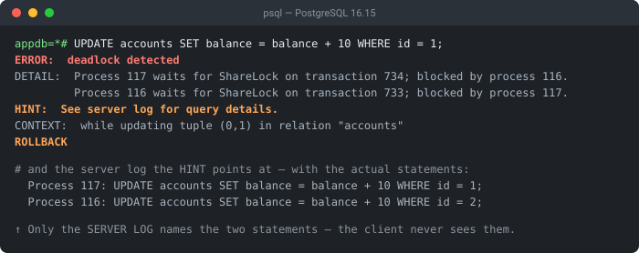

Quick answer
Two transactions each hold a lock the other needs, so PostgreSQL breaks the cycle by aborting one (the victim). The durable fix is to acquire locks in a consistent order (e.g. always by ascending id), keep transactions short, and retry the aborted transaction — a retry usually succeeds once the other one finishes.
The exact error string
ERROR: deadlock detected
DETAIL: Process 1234 waits for ShareLock on transaction 5678; blocked by process 4321.
Process 4321 waits for ShareLock on transaction 8765; blocked by process 1234.
HINT: See server log for query details.
CONTEXT: while updating tuple (0,7) in relation "accounts"
SQLSTATE: 40P01What it actually looks like

ERROR: is followed by two spaces — useful if you are grepping logs. And the HINT is not boilerplate: the client error never shows the conflicting statements, while the server log does, naming both processes and exactly what each was running. That is the difference between guessing at a lock order and knowing it.Postgres detected a cycle: process 1234 waits on 4321, and 4321 waits on 1234. Neither can ever proceed, so Postgres aborts one to free the other. The aborted transaction gets the error; the survivor commits normally.
Why deadlocks happen
A deadlock needs two transactions that take the same locks in opposite order. Transaction A locks row 1 then wants row 2; transaction B locks row 2 then wants row 1. Each waits for the other forever — until Postgres steps in:
-- Transaction A -- Transaction B
BEGIN; BEGIN;
UPDATE accounts SET ... WHERE id=1;
UPDATE accounts SET ... WHERE id=2;
UPDATE accounts SET ... WHERE id=2; -- waits for B
UPDATE accounts SET ... WHERE id=1; -- waits for A
-- ❌ deadlock — Postgres aborts oneFix 1: lock in a consistent order (the real fix)
If every transaction touches rows in the same order, the opposite-order cycle can't form. Order your updates (and SELECT ... FOR UPDATE) deterministically:
-- Both transactions update in ascending id order — no cycle possible
UPDATE accounts SET balance = balance - 100 WHERE id = 1;
UPDATE accounts SET balance = balance + 100 WHERE id = 2;
-- locking reads: take the locks up front, in order
SELECT * FROM accounts WHERE id IN (1, 2) ORDER BY id FOR UPDATE;Fix 2: retry the victim
Deadlocks are normal under concurrency — the right response is to retry. Catch SQLSTATE 40P01, roll back, and re-run the transaction (make it idempotent so a retry is safe):
import psycopg2, time
for attempt in range(3):
try:
with conn: # commits, or rolls back on error
with conn.cursor() as cur:
cur.execute("UPDATE accounts SET ... WHERE id = %s", (1,))
cur.execute("UPDATE accounts SET ... WHERE id = %s", (2,))
break # success
except psycopg2.errors.DeadlockDetected:
time.sleep(0.1 * (attempt + 1)) # back off, then retryFix 3: keep transactions short
The longer locks are held, the wider the window for a collision. Don't do slow work — HTTP calls, file I/O, waiting on user input — inside a transaction. Read what you need, write quickly, and commit. Adding the right indexes also shrinks lock scope, because Postgres locks fewer rows when it can target them precisely.
Get the conflicting statements out of the server log
The HINT: See server log for query details. line is not boilerplate, and it is the single most useful thing on the page. The client error deliberately withholds the SQL — another session's statements are not yours to see — but the server log records both sides:
2026-09-12 05:10:11.270 UTC [117] ERROR: deadlock detected
2026-09-12 05:10:11.270 UTC [117] DETAIL: Process 117 waits for ShareLock on transaction 734; blocked by process 116.
Process 116 waits for ShareLock on transaction 733; blocked by process 117.
Process 117: UPDATE accounts SET balance = balance + 10 WHERE id = 1;
Process 116: UPDATE accounts SET balance = balance + 10 WHERE id = 2;
2026-09-12 05:10:11.270 UTC [117] CONTEXT: while updating tuple (0,1) in relation "accounts"
2026-09-12 05:10:11.270 UTC [117] STATEMENT: UPDATE accounts SET balance = balance + 10 WHERE id = 1;Captured on PostgreSQL 16.15. The two Process N: lines are the whole diagnosis: they show each transaction's final statement, and reading them side by side makes the inverted lock order obvious — one transaction reached id = 1 last, the other reached id = 2 last, so each already held what the other was waiting for. On a managed service (RDS, Cloud SQL, Supabase) this is in the Postgres error log, not in your application logs.
The settings that matter
| Setting | Default (PG 16) | Why it matters here |
|---|---|---|
deadlock_timeout | 1s | How long a transaction waits before Postgres runs deadlock detection at all. Detection is not instant — it is deliberately deferred, because the check is expensive and most waits resolve on their own. |
log_lock_waits | off | Turn it on. It logs every wait that exceeds deadlock_timeout, which surfaces the near-misses that precede a real deadlock. |
lock_timeout | 0 (disabled) | Caps how long a statement will wait for a lock. Setting it converts some would-be deadlocks into a quick, predictable failure you can retry. |
One consequence of that first row is worth stating plainly: because detection only runs after a full second of waiting, a deadlock costs at least deadlock_timeout of latency before anything is reported. If deadlocks are frequent enough to matter, that delay is part of your p99 — another reason to fix the lock ordering rather than rely on retries alone.
The SQLSTATE is 40P01 (deadlock_detected). It belongs to class 40, transaction rollback — the same family as serialization failures — which is exactly why it is safe to retry: Postgres guarantees the aborted transaction changed nothing. Match on the code rather than the message text, since the message is localised.
Debugging checklist
- ✓ Read the
DETAIL— it names the two processes and the queries that collided - ✓ Make every transaction take locks in the same order (e.g. by ascending
id) - ✓ Catch SQLSTATE
40P01and retry with a small backoff - ✓ Keep transactions short; never do HTTP / slow I/O while holding locks
- ✓ Order locking reads:
SELECT ... ORDER BY id FOR UPDATE - ✓ Enable
log_lock_waitsto capture the colliding queries in the log
Frequently Asked Questions
What does 'ERROR: deadlock detected' mean in Postgres?
Two (or more) transactions each hold a lock that the other needs, so neither can proceed. PostgreSQL detects the cycle and breaks it by aborting one transaction (the 'victim') with this error, letting the other continue. The DETAIL line names the processes and the locks involved.
What is the main way to prevent deadlocks?
Always acquire locks in a consistent order. If every transaction updates rows or tables in the same order (for example, always by ascending id), two transactions can never hold locks in the opposite order, so the cycle that causes a deadlock cannot form.
Should I retry after a deadlock?
Yes. A deadlock aborts only the victim transaction; retrying it usually succeeds because the other transaction has finished. Catch the deadlock (SQLSTATE 40P01), roll back, and retry the whole transaction a few times with a small backoff. Make the transaction idempotent so a retry is safe.
How do I read the DETAIL line?
The DETAIL shows 'Process A waits for ShareLock on transaction X; Process B waits for ShareLock on transaction Y' and the queries involved. It tells you which two statements locked rows in opposite order — the pair to reorder. Enable log_lock_waits to capture more context in the logs.
Do shorter transactions help?
Yes. The longer a transaction holds locks, the larger the window in which another transaction can collide with it. Keep transactions short, do not perform slow work (HTTP calls, user prompts) while holding locks, and commit as soon as the writes are done.
Can SELECT ... FOR UPDATE cause deadlocks?
Yes — it takes row locks, so two transactions locking the same rows in different orders can deadlock just like UPDATE. Lock rows in a deterministic order (for example SELECT ... FOR UPDATE ORDER BY id) and lock everything you need up front rather than incrementally.
References
- Explicit Locking (PostgreSQL docs)
- PostgreSQL Error Codes (PostgreSQL docs)
More backend & build errors
Browse the full reference for Node.js, Python, Docker, and database errors — exact message, cause, and fix.